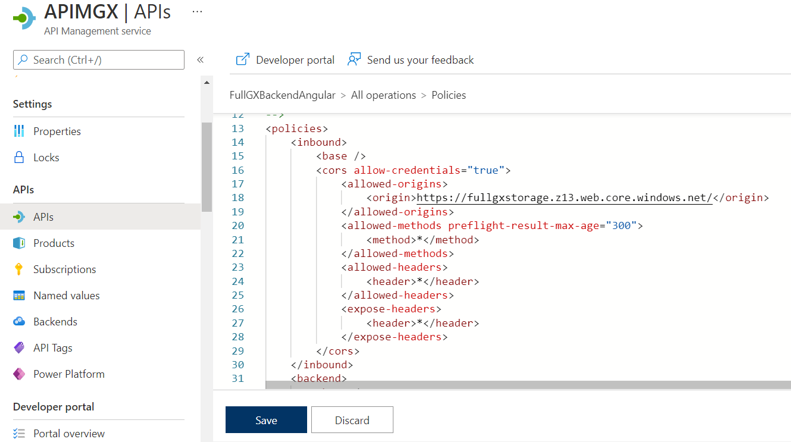
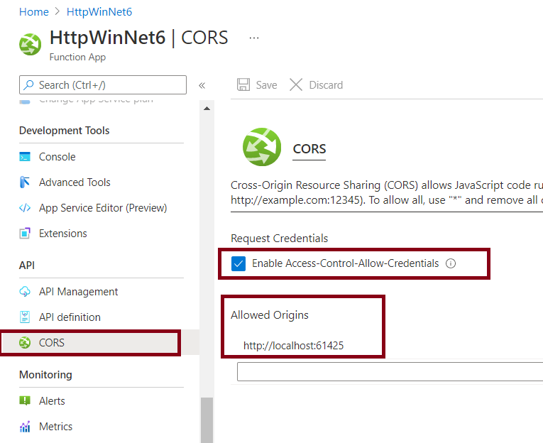

When deploying Angular applications, you can choose to deploy the backend services as serverless. You can deploy them as Amazon Lambda or as Azure Functions.
Then, you have to configure the CORS.
This configuration has to be done after having deployed your front end application (see Deploy Front-end applications to Cloud Provider Object Storage).
When using Azure API Management (APIM) for the backend services deployment, go through the API inbound policies of APIM, on the Azure portal, and configure the CORS Allow Origin policy for the machine where the Angular app is running.

Example:
<cors allow-credentials="true">
<allowed-origins>
<origin>http://localhost:62560/</origin>
</allowed-origins>
<allowed-methods preflight-result-max-age="300">
<method>*</method>
</allowed-methods>
<allowed-headers>
<header>*</header>
</allowed-headers>
<expose-headers>
<header>*</header>
</expose-headers>
</cors>
For more information on this topic, read the Azure documentation.
If you just deploy to Azure Functions without using APIM, configure the CORS at the Function App CORS setting (located at the left hand side menu) of the Function App.

| Backlinks | |
| Deploy Front-end applications to Cloud Provider Object Storage | Deploy mobile services to Azure Serverless using API Management |